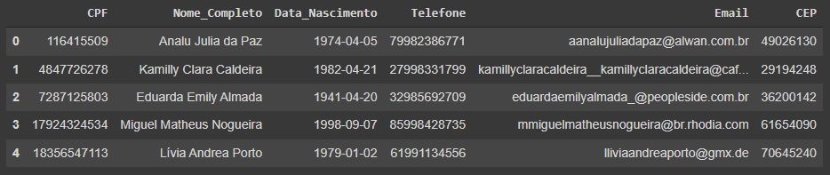
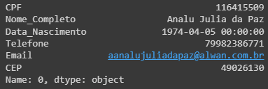

Pandas
Explicação
Pandas é uma biblioteca do Python que permite extrair dados de diversos arquivos, como Excel, Json, HTML, SQL, etc...
A mesma possui funcionalidades voltadas para análises de dados e ferramentas de manipulação de tabelas.
Glossário
DataFrame
Estrutura para dados que é composta de duas dimensões, estas sendo linhas e colunas. Assemelha-se à uma tabela de Excel.

Series
Estrutura de dados de uma dimensão, sendo basicamente composta dos valores de uma linha ou coluna que representa apenas uma fatia do DataFrame.

Comandos
-
Instalando a biblioteca
-
Importando a biblioteca
-
Lendo um arquivo Excel
-
Resumo das dimensões do DataFrame
-
Ver nome das colunas
-
Ver os primeiros resultados Como padrão a quantidades de linhas à ser trazido são cinco, porém esse valor pode ser alterado se preenchido os parênteses de acordo com o desejado.
-
Ver os últimos resultados
-
Selecionar uma coluna específica - pelo nome O segundo método apresentado no exemplo somente é permitido de usar em nomes de colunas sem espaço entre palavras.
-
Selecionar o primeiro valor de uma coluna específica
-
Selecionar uma linha através do index
-
Selecionar uma linha e uma coluna através do index
-
Criando um DataFrame
-
Estatísticas descritivas das colunas - media, desvio padrão, mínimo, máximo, etc ...
-
Extraindo o DataFrame em um arquivo Excel